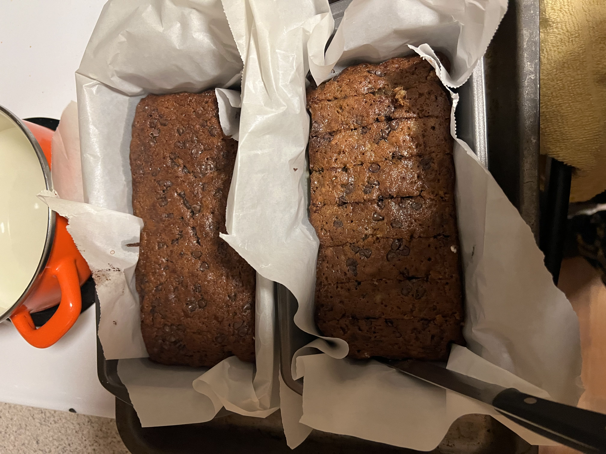
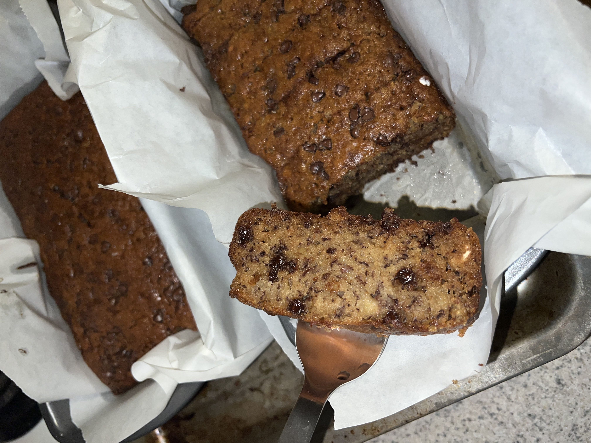

🍌✨･ﾟ✧ Banana Bread Recipe ✧･ﾟ✨🍌
Christine Vo, Journ 220


(づ｡◕‿‿◕｡)づ 🍌 Freshly baked by me; recipe originated from tik tok
♡ Ingredients ♡
- 3 ripe bananas (the riper the yummier!)
- 1/2 cup butter unsalted (melted)
- 2 eggs
- 1/2 cup granulated sugar
- 1/2 cup brown sugar
- 1/2 cup whole milk
- 1 tsp vanilla extract
- 1 1/4 cups all-purpose flour
- 1 tsp baking soda
- 1 tsp salt
- 1/2 tsp cinnamon
- 1/2 cup semi-sweet chocolate chips (i prefer the minis)
────୨ৎ──── 🍞🍌 ────୨ৎ────
(ﾉ◕ヮ◕)ﾉ*:･ﾟ✧ Instructions
🍌 Step 1: Preparation ♡
- Preheat your oven to 350°F (175°C). Grease or line a loaf pan.
- Mash bananas in a large bowl until smooth.
🥣 Mix Ingredients ✧
- Stir in melted butter, eggs, both sugars, milk, and vanilla until combined.
- Mix dry ingredients in a separate bowl: flour, baking soda, salt, and cinnamon.
🍞 Combine with Care ♡
- Gently fold dry ingredients into the wet mixture. (｡•̀ᴗ-)✧ Do not overmix!
- Fold in chocolate chips.
- Pour batter into the loaf pan.
✨ Bake and Cool ✧
- Bake for 50 minutes, or until a toothpick comes out clean.
- Cool before slicing and enjoy (っ˘ڡ˘ς).
────୨ৎ──── 🍞🍌 ────୨ৎ────
Fun Fact: This recipe is basically impossible to ruin by overbaking, since its batter is super moist! ꒰ᐢ. .ᐢ꒱